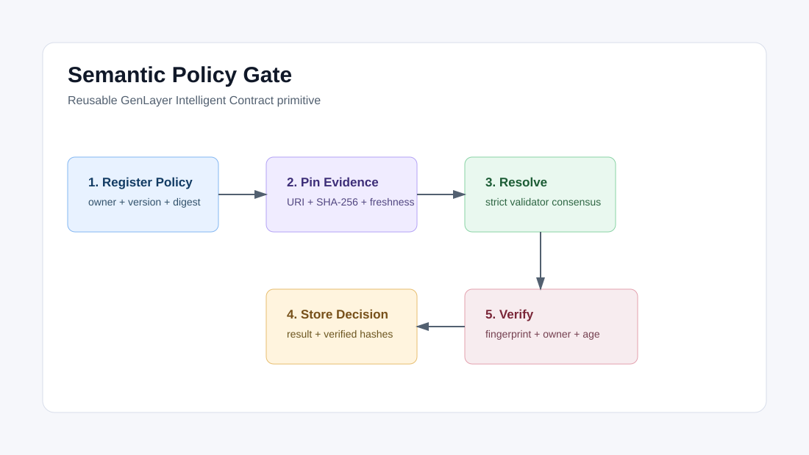

GenLayer Intelligent Contract
Specification-bound policy decisions over immutable evidence.
SemanticPolicyGate v2 binds every result to the exact policy owner and version, subject, full content hashes, authoritative evidence, freshness limits, corroboration rule, and decision lifetime.
policy snapshot + evidence commitments + freshness rules -> bound decisionWhy It Matters
Immutable Specification
A canonical SHA-256 fingerprint commits to every security-relevant input.
Verified Evidence
Validators fetch authoritative HTTPS records and verify their complete registered SHA-256 commitments.
Bound Consumer API
Consumers check the expected fingerprint, policy owner, active policy version, and maximum age.
Architecture

Core API
register_policy(name, policy_text) -> u256
compute_fingerprint(policy + content + evidence specification) -> sha256
submit_decision(policy + content + evidence specification) -> u256
resolve_semantic_decision(decision_id) -> None
get_decision(decision_id) -> Decision
is_allowed_for(decision_id, fingerprint, policy_owner, max_age) -> bool
is_denied_for(decision_id, fingerprint, policy_owner, max_age) -> bool
needs_review_for(decision_id, fingerprint, policy_owner, max_age) -> boolFail-Closed Verification
Fetch errors, stale evidence, hash mismatches, insufficient corroboration, policy changes, and substituted fingerprints cannot authorize an action.
Expected:
decision: allowed | denied | needs_review
content_verified: true
consensus_bound: true
verified_source_count: 1 | 2
is_allowed_for: true only for the exact current specification